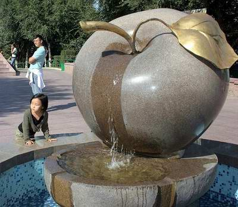

Apple Academy
Nature's Dental Floss


Apples grow on apple trees, a deciduous tree in the rose family. The tree originated in Central Asia, where its wild ancestor is still found today. In 2010 69 million tons of apples were grown, from 7,500 different strains. You can learn more about apples here, or if you wish to learn more about the vast varierty of apple strains, take a look here.
If you'd like to follow me on Twitter my account name is @Bb_Gabe
